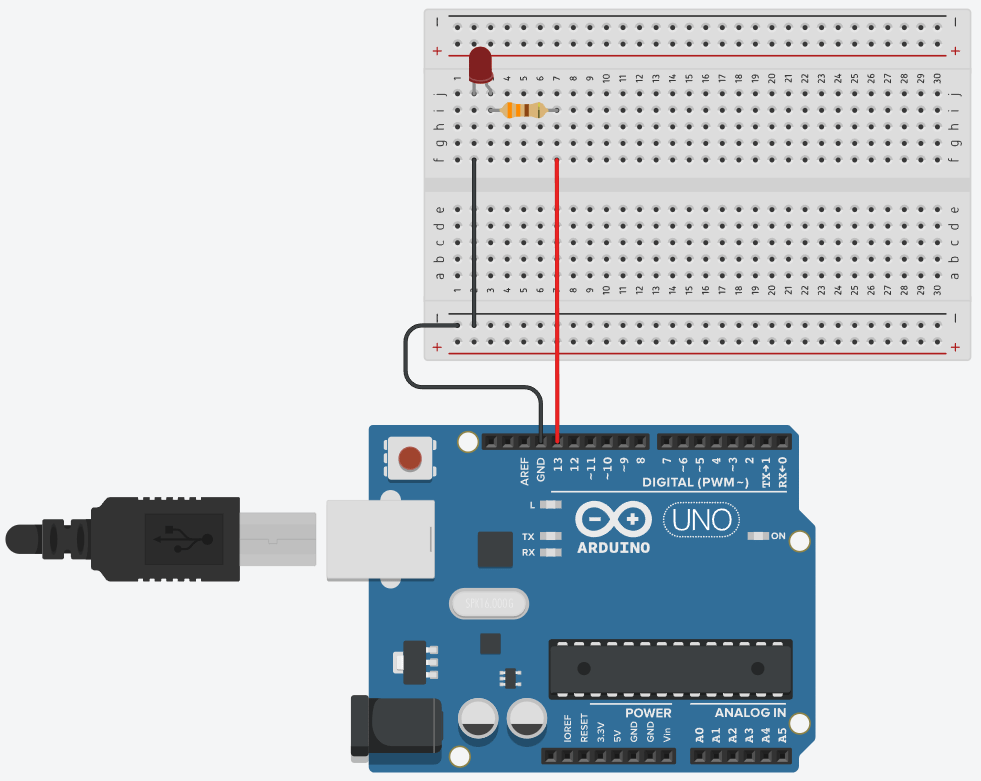
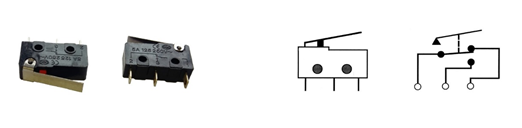

Aula 1 – Pisca LED: Seu Primeiro Código
Olá! Seja muito bem-vindo(a) ao tutorial de Arduino Básico, uma série com 10 aulas feita sob medida para você que quer começar a programar com Arduino sem mistério e sem dor de cabeça. Aqui, vamos aprender passo a passo como programar a placa Arduino e criar projetos que acendem LEDs, leem sensores, tocam buzzer… enfim, tudo aquilo que faz a gente se sentir um verdadeiro engenheiro de filmes futuristas (só que com fios bagunçados e uma bancada cheia de LEDs, fios e resistores).
Se você nunca programou antes, não se preocupe. A ideia aqui é começar do zero e evoluir com calma, sempre com exemplos práticos, explicações claras e uma boa dose de paciência. E sim, errar faz parte do processo. (se a luz não acender de primeira, a culpa provavelmente não é do universo 😄)
Prepare seu computador, sua plaquinha Arduino e o famoso cabo USB (aquele que sempre some quando a gente mais precisa). Está tudo pronto? Então bora começar!

O que é Arduino?
Arduino é uma plataforma de prototipagem eletrônica de hardware e software livre, ou seja, você pode criar seus próprios projetos de forma simples, prática e com baixo custo. Ele é ideal para quem está começando, mas também é poderoso o suficiente para projetos mais avançados.
As placas Arduino podem ser fabricadas artesanalmente ou compradas prontas. O software usado para programá-las é gratuito e está disponível para download.
O que dá pra fazer com o Arduino?
Aqui vai um spoiler: quase tudo! 😄 Com o Arduino, você pode desenvolver projetos de automação residencial, robótica, Internet das Coisas (IoT), e até projetos criativos como brinquedos, instrumentos musicais, instalações artísticas e muito mais.
Quer ir mais longe? Há projetos incríveis com impressoras 3D, drones e até satélites feitos com base no Arduino. As possibilidades são praticamente infinitas!
Arduino UNO R3
Entre os diversos modelos de placas Arduino, o UNO R3 se destaca por ser o mais utilizado, o mais bem documentado e o mais indicado para quem está começando. Até os simuladores o preferem!

- Conector USB (alimentação externa e comunicação serial)
- Botão de reset da placa Arduino
- Polyfuse (proteção da porta USB do computador contra curtos e sobrecargas).
- LED indicativo que a placa está ligada
- Pinos de entrada e saída digital (~ podem ser usados com PWM)
- LED embutido ligado ao pino 13 (LED_BUILTIN)
- ATmega 16U2 (conversor USB/serial)
- LED TX (transmissor) e RX (receptor) - comunicação serial
- Pinos 0 e 1 (também podem ser usados para comunicação com um módulo bluetooth)
- Porta ICSP (programação direta via protocolo serial)
- Microcontrolador ATmega 328P
- Cristal de quartzo 16 Mhz (clock)
- Conector fêmea 2.1 mm com centro positivo (alimentação externa: 7 a 12 V)
- Regulador de tensão (5V)
- Pinos de tensão e GND
- Entradas analógicas
Software Arduino
🔗 https://arduino.cc/en/software/O software arduino, também conhecido como Arduino IDE é gratuito e funciona com qualquer modelo de placa da plataforma Arduino. Para começar, você vai precisar de três itens: um computador, a placa Arduino e um cabo USB para conectar os dois. Com isso, já é possível escrever, enviar e testar seus primeiros programas.

Componentes eletrônicos básicos
Antes de programar, é importante entender com quem estamos lidando no mundo físico: os componentes eletrônicos. São eles que dão vida aos nossos projetos, controlam a corrente elétrica e fazem a mágica acontecer ou pelo menos, piscarem LEDs! 😄
A Eletrônica é a área da ciência que estuda e utiliza circuitos formados por esses componentes, com o objetivo de representar, armazenar, transmitir ou processar informações. Em outras palavras, ela transforma sinais elétricos em ações, e é assim que controlamos sensores, motores, botões e muito mais.
Mas calma! Não vamos estudar tudo de uma vez. A cada aula, conforme os experimentos forem evoluindo, vamos conhecer novos componentes: resistores, LEDs, botões, sensores e por aí vai. Vamos ver para que servem, como se comportam e como usá-los com segurança e criatividade. Você não precisa decorar nada agora, vamos aprender fazendo, explorando e testando juntos.
Breadboard (protoboard)

Usada para prototipação de circuitos elétricos, a protoboard é uma placa de ensaios que permite a montagem dos componentes eletrônicos sem uso de solda. Ela é feita por blocos de plástico perfurados e possui internamente várias lâminas que fazem o contato elétrico.
Resistores

O resistor é um dos componentes mais básicos e também mais importantes da eletrônica. Sua principal função é simples e essencial: limitar a corrente elétrica que passa por um circuito, evitando que outros componentes "tomem um choque de realidade". 😄
A resistência elétrica é medida em ohms (Ω), em homenagem ao físico Georg Ohm (o cara que descobriu que sim, a eletricidade também precisa de limites!). Você vai encontrar resistores de todos os tipos e valores, desde frações de ohm até milhões de ohms (também conhecidos como megaohms). Eles são pequenos, geralmente com listras coloridas no corpo (uma espécie de código secreto que indica o valor da resistência).
Calculadora de resistores (4 faixas)
🎨 Cores → Valor
Faixa 1 | Faixa 2 | Faixa 3 ( multiplicador ) | Faixa 4 ( tolerância )
🔢 Valor → Cores
Valor em ohms (Ω) | Tolerância
LEDs

O LED (sigla para Diodo Emissor de Luz) é aquele componente simpático que acende quando tudo está funcionando como deveria. O LED funciona como um diodo especial, que em vez de só conduzir a corrente elétrica em um sentido, também emite luz nesse processo. Mas atenção: o LED tem polaridade, ou seja, não dá pra ligar de qualquer jeito! O terminal menor (ou o lado do chanfro na base) indica o cátodo, que é o lado negativo. Já o terminal maior é o ânodo (lado positivo).
Os LEDs estão por toda parte: em várias cores, formatos e tamanhos. Alguns piscam, outros mudam de cor, e outros são tão potentes que parecem holofotes de show! Mas cuidado! LEDs são sensíveis e não gostam de corrente demais. Se você ligar direto no Arduino sem um resistor para limitar a corrente... bem, digamos que o LED vai brilhar forte e brevemente. 😬
Então, regra de ouro: sempre use um resistor em série com o LED. Assim, você garante luz na medida certa e um circuito saudável.
Qual o resistor ideal para ligar um LED?
A saída digital do Arduino fornece 5V, e a corrente segura para a maioria dos LEDs é 20 mA. Cada cor de LED tem uma queda típica de tensão:
- 🔴 Vermelho: ~2.0V
- 🟢 Verde: ~2.2V
- 🟡 Amarelo: ~2.1V
Usando a famosa Lei de Ohm (V = R × I), podemos calcular o resistor ideal. Mas calma, você não precisa virar um matemático agora! Aqui vai a dica prática:
🔹 Resistor de 220Ω ou 330Ω já está ótimo para a maioria dos casos. Eles garantem segurança tanto para o LED quanto para o Arduino.
🔹 Quer ajustar o brilho? Veja a mágica na prática:
- 150Ω → LED bem brilhante (20 mA – ideal)
- 220Ω → Brilho equilibrado (~13 mA)
- 330Ω → Brilho mais suave (~9 mA)
- 470Ω → LED discreto (~6 mA)
⚠️ Evite resistores abaixo de 150Ω — podem forçar o LED e a saída do Arduino.
Arduino básico - Primeiros passos
Laboratório prático: Pisca LED
Objetivo: Desenvolver um simples circuito para fazer um LED piscar.
Lista de material:

Diagrama elétrico:

Código fonte:

Aula 2 - Fundamentos da programação
Olá, futuro mestre do Arduino! 😄
Se você já fez o LED piscar, parabéns! Agora é hora de dar o próximo passo e começar a programar de verdade.
Nesta aula você vai aprender a exibir o famoso Hello World, usar variáveis, fazer contas simples e dar os primeiros passos na lógica de programação, mas não se preocupe: nada de fórmulas malucas ou matemática assustadora. Aqui a ideia é aprender de forma simples e prática. Vamos lá!
Linguagem de programação
Imagine a linguagem de programação como um idioma criado especialmente para conversar com as máquinas (mas nada de "Oi, tudo bem?"). Aqui, as conversas são cheias de instruções que dizem exatamente o que o computador deve fazer. Cada linguagem tem sua própria gramática, com símbolos e regras que organizam essa conversa de forma que o computador entenda.
Linguagem de máquina (baixo nível)
Essa é a linguagem nativa dos microcontroladores e processadores. Aqui, a conversa é crua, direta e sem rodeios: só zeros e uns (o famoso sistema binário). O processador entende isso como dois níveis de tensão elétrica. Para a gente, parece código alienígena, mas para a máquina, é poesia pura.
Linguagem de alto nível
Agora sim, entramos no mundo dos programadores! As linguagens de alto nível (como C, Python ou Java) são bem mais amigáveis para os humanos. Elas se parecem um pouco mais com frases que conseguimos entender e estão bem distantes daquela sopa de bits da linguagem de máquina. O melhor: você não precisa conhecer os bastidores da CPU (registradores, instruções e outras miudezas ficam escondidinhas). É como dirigir um carro automático: só pisa e vai!
Compilar
Compilar é como contratar um tradutor juramentado entre você e a máquina. O programa que você escreveu em uma linguagem compreensível é traduzido para linguagem de máquina, pronta para ser executada direto no microcontrolador. Sem compilar, a máquina fica olhando pro código igual você olha pra uma receita de bolo em japonês!
Linguagens de programação para microcontroladores e sistemas embarcados
Quando falamos em programar sistemas embarcados (como placas Arduino, microcontroladores e dispositivos inteligentes) devemos usar linguagens capazes de lidar com recursos limitados e tempo real, usamos linguagens bem conhecidas, como:
- Assembly (para quem gosta de emoção)
- C/C++ (as estrelas dos microcontroladores)
- Python (aparece na lista, mas seu negócio mesmo é outro)
- Java (sim, ela insiste em participar também 😅)
Linguagem de Programação Arduino
A linguagem do Arduino é baseada em C/C++ e possui uma estrutura simples, feita sob medida para aprender e criar projetos na prática. Os principais elementos da linguagem são:
- Sketch (o seu programa)
- Variáveis (para guardar informações)
- Operadores (para fazer contas e comparações)
- Estruturas de controle (para tomar decisões)
- Funções (para organização e reutilização do código)
Hello World
Vamos começar com o clássico “Hello World”, um verdadeiro rito de passagem para todo programador. 😄
Variáveis e operadores aritméticos na prática
Vamos agora explorar um dos fundamentos mais importantes da programação: o uso de variáveis e operadores aritméticos. É com eles que você começa a dar inteligência ao seu projeto!
Aula 3 - Decisões Inteligentes: Botão Liga-Desliga
😄 Já piscou, já somou... agora é hora de decidir!
Se você já exibiu o “Hello World” e entendeu como funcionam variáveis e contas simples, agora é hora de dar um passo importante: tomar decisões com o seu código!
Nesta aula, vamos aprender sobre chaves e botões, como usar os modos pull-up e pull-down, e o famoso if...else — o coração da lógica condicional.
E claro, tudo isso com experimentos práticos, como:
- Entender de vez como funcionam os níveis lógicos 0 e 1 nas entradas digitais
- entender de vez o tal do INPUT_PULLUP
- Ligar e desligar o LED com dois botões
- Fazer o mesmo com apenas um botão
Interruptor elétrico (chave Liga-Desliga)

Um interruptor elétrico é um dispositivo simples, usado para ligar ou desligar um circuito elétrico.
Interruptor de pressão

Um interruptor de pressão é um botão utilizado para ativar alguma função. Interruptores de pressão funcionam como um interruptor elétrico e podem ser normalmente fechados ou abertos.
Micro switch
Também conhecido como “chave de fim de curso” é um tipo de interruptor de pressão que pode ser usado como um simples sensor mecânico e pode ser usado no robô para detectar um obstáculo. Encontramos diversos tipos de micro switches cujas especificações são o tamanho, o tipo de alavanca e a capacidade de corrente.
Entradas digitais e interruptores no Arduino
Nesta etapa da aula, exploramos como o Arduino interpreta sinais vindos de botões e interruptores, utilizando os modos pull-up, pull-down e o prático INPUT_PULLUP. Esses conceitos garantem que os comandos sejam lidos de forma estável e confiável, deixando o botão no controle e o Arduino bem comportado. 😄
Pull-up

Aqui o pino é puxado gentilmente para o 5V usando um resistor.
- Quando o botão não está pressionado, o pino está em 1.
- Quando você pressiona o botão e liga no GND, ele vai para 0.
É como se disséssemos: "Ei, Arduino, considera isso 1... até alguém apertar o botão!"
Pull-down

Agora o pino é puxado para o GND por padrão, com um resistor.
- Quando o botão não está pressionado, o pino está em 0.
- Quando você pressiona e liga no 5V, ele vai para 1.
É o oposto do pull-up, mas a ideia é a mesma: manter o pino num estado fixo até que o botão diga o contrário.
INPUT_PULLUP

Essa é uma mão na roda! É uma função interna do Arduino que ativa automaticamente um resistor pull-up no pino digital, ou seja, você não precisa colocar o resistor na protoboard pois o Arduino já tem um escondido lá dentro. Basta configurar o pino como: pinMode(pinoBotao, INPUT_PULLUP);
E pronto! O pino fica em 1 por padrão, e vai para 0 quando o botão for pressionado (ligado ao GND).
Comando if (se)
O if é usado quando queremos que o Arduino tome uma decisão simples. Ele verifica se uma condição é verdadeira — como “o botão foi apertado?”. Se for, ele executa o comando que vem em seguida. É como dizer: se isso acontecer, faça isso. 😄
Comando if-else (se... senão)
Com o if-else, o Arduino tem duas opções: se a condição for verdadeira, ele executa um bloco de comandos. Se não for, faz outra coisa no lugar. É como dizer: se o botão foi apertado, acenda o LED; senão, mantenha apagado. Bem direto, como um bom ajudante deve ser!
🟦🟦🟦⬜️⬜️ Em produção...
Aula 4 - Desafio: Semáforo de pedestres
🟦🟦🟦⬜️⬜️ Em produção...
Aula 5 - Operadores Lógicos com Simuladores
🟦🟦🟦⬜️⬜️ Em produção...
Simulador dos operadores lógicos
AND